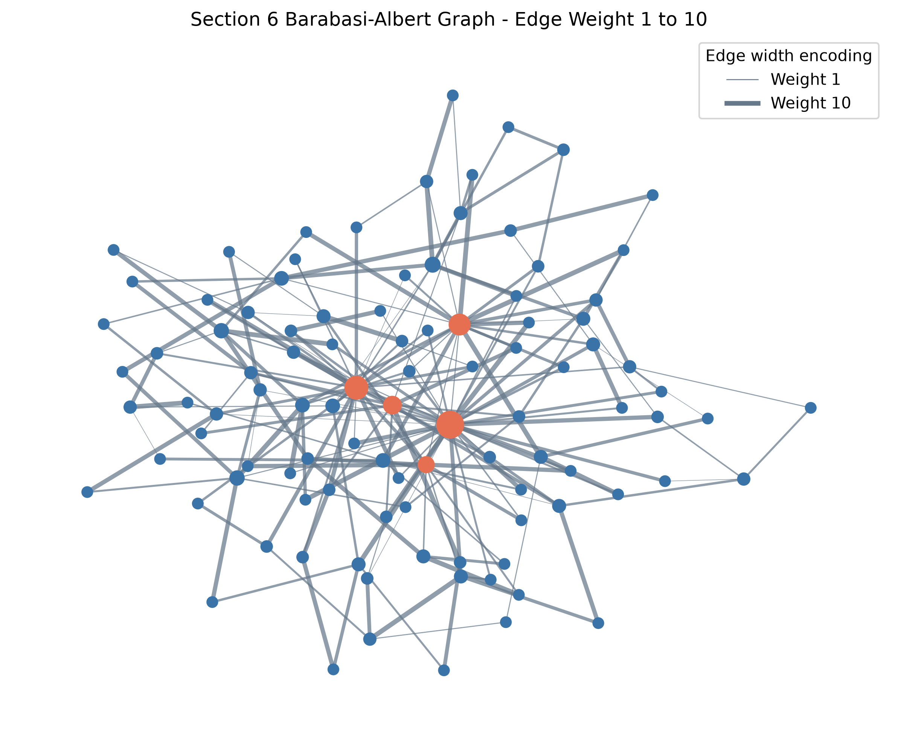

Objective and data source
The exercise reuses the required teaching definition and saves every calculated
artifact through the deterministic Python pipeline. Relevant data:
outputs/tables/barabasi_albert_edge_weights.csv.
Scope: The Facebook dataset is used for the empirical
analysis. This mandatory network exercise uses the supplied or explicitly synthetic
relationship data because the Facebook table has no verified user-to-user edges.
Verified result
196 edges use reproducible weights from 1 to 10.

Python implementation
def add_reproducible_edge_weights(graph: nx.Graph, seed: int = SEED) -> nx.Graph:
"""Copy a graph and assign integer edge weights from 1 through 10."""
weighted = graph.copy()
rng = random.Random(seed)
for source, target in weighted.edges():
weighted[source][target]["weight"] = rng.randint(1, 10)
return weighted
def create_weighted_ba_figures(
original: nx.Graph, weighted: nx.Graph
) -> tuple[Path, Path]:
"""Draw Section 6's BA graph before and after edge-weight encoding."""
position = nx.spring_layout(original, seed=SEED, k=0.25)
degrees = dict(original.degree())
sizes = [28 + 7 * degrees[node] for node in original.nodes()]
hubs = set(sorted(degrees, key=degrees.get, reverse=True)[:5])
node_colors = [
COLORS["coral"] if node in hubs else COLORS["blue"] for node in original.nodes()
]
fig, ax = plt.subplots(figsize=(10, 8))
nx.draw_networkx(
original,
position,
ax=ax,
node_size=sizes,
node_color=node_colors,
edge_color="#BCC5CE",
width=0.55,
with_labels=False,
)
ax.set_title("Section 6 Barabasi-Albert Graph - Unweighted")
ax.axis("off")
unweighted_path = STATIC / "barabasi_albert_unweighted.png"
_save(fig, unweighted_path)
edge_weights = [weighted[u][v]["weight"] for u, v in weighted.edges()]
widths = [0.35 + 2.65 * (weight - 1) / 9 for weight in edge_weights]
fig, ax = plt.subplots(figsize=(10, 8))
nx.draw_networkx_nodes(
weighted, position, ax=ax, node_size=sizes, node_color=node_colors
)
nx.draw_networkx_edges(
weighted,
position,
ax=ax,
width=widths,
edge_color=COLORS["gray"],
alpha=0.72,
)
ax.legend(
handles=[
Line2D([0], [0], color=COLORS["gray"], lw=0.6, label="Weight 1"),
Line2D([0], [0], color=COLORS["gray"], lw=3.0, label="Weight 10"),
],
title="Edge width encoding",
loc="upper right",
)
ax.set_title("Section 6 Barabasi-Albert Graph - Edge Weight 1 to 10")
ax.axis("off")
weighted_path = STATIC / "barabasi_albert_weighted.png"
_save(fig, weighted_path)
return unweighted_path, weighted_path
Browse complete Python source Read report section
Interpretation and limitation
Edge width changes which ties appear salient, but seeded random weights are an encoding demonstration. Node centrality and edge weight are related only when the selected centrality definition explicitly uses weights.
Limitation: Random weights demonstrate encoding and do not represent observed tie importance.